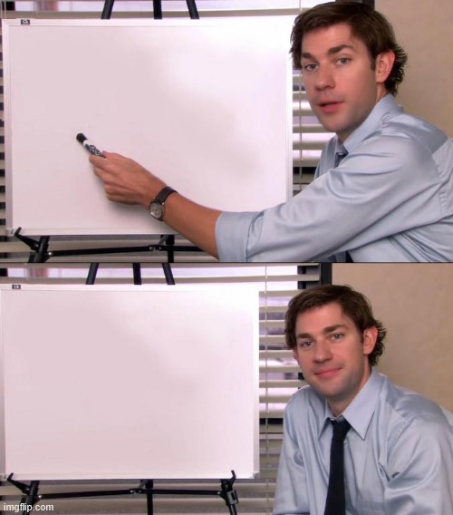
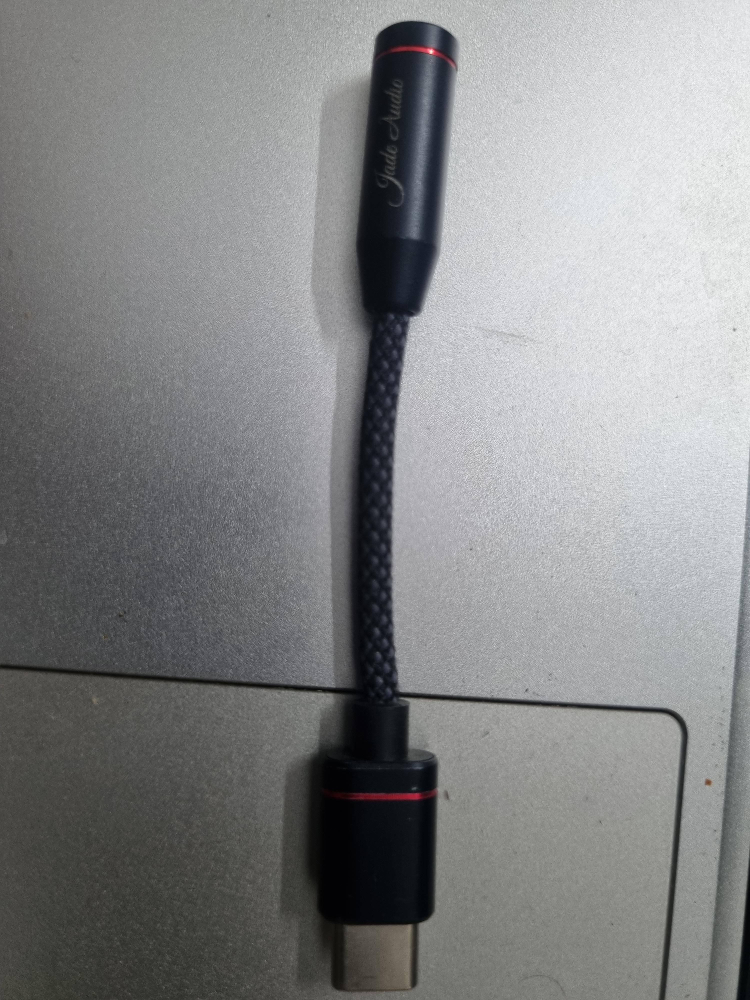
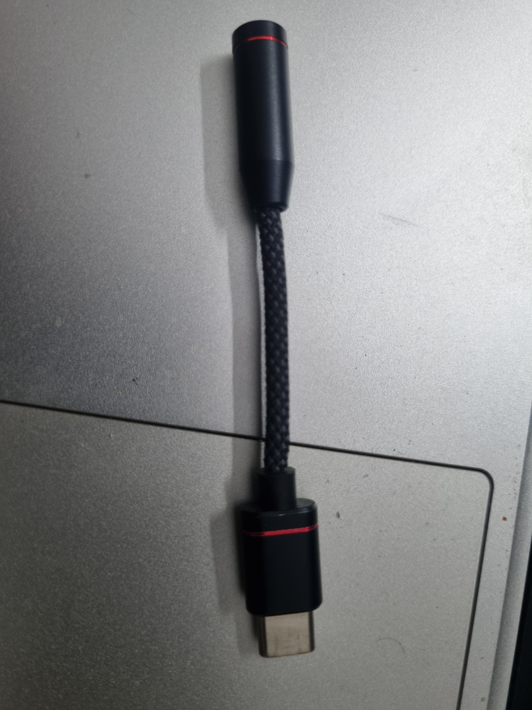
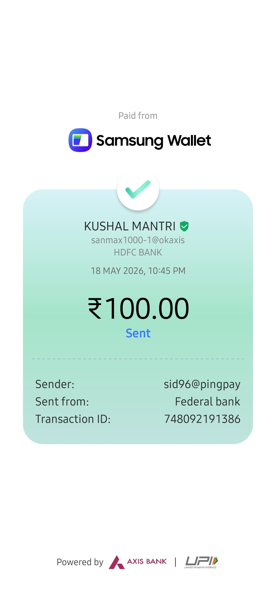

How the research feels in one sentence
We are trying to stop airports from being selected like a random button-mash and instead choose them using network logic, demand, and policy reasoning.
“Why are these airports chosen?”

Use a meme here to show how traditional selection can feel arbitrary.
“Enter the model”

Use a meme here to show the model combining network effects and demand.
“The model said: not so fast”

Use a meme here to show the model changing airport priorities.
“More Avengers, less chaos”

Use a simple chart or visual summary for the policy implication.
What problem are we solving?
We want a systematic way to choose airports and routes for regional connectivity schemes, instead of relying on ad hoc selection.
What makes it different?
The framework combines network structure, demand, and optimization, so it captures practical aviation effects.
Why use memes?
Memes make the story memorable and help non-specialists understand the main idea quickly.
One-line summary
The model helps pick airports and routes that add the most connectivity value while avoiding wasteful subsidy spending.